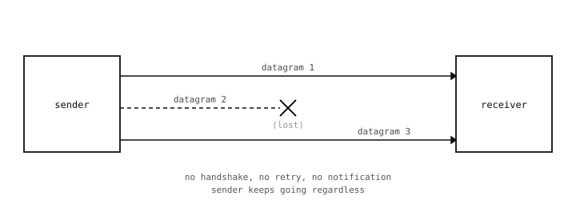

9.9. UDP – envía un paquete y cruza los dedos¶
UDP, el User Datagram Protocol, es el más simple de los dos servicios que ofrece la capa de transporte. Cada envío UDP es un datagrama – un fragmento autocontenido de bytes dirigido a una IP y un puerto, soltado en la red por su cuenta. El protocolo lo entrega si puede; si no puede, no lo reintenta, no avisa al emisor y no preserva ningún orden entre datagramas.
9.9.1. Qué añade UDP a IP¶
UDP es una capa fina sobre IP. Añade tres cosas a la entrega cruda de IP:
Números de puerto en ambos extremos, de modo que un datagrama pueda entregarse al programa correcto del host de destino, no solo al host (consulta Puertos).
Un campo de longitud para que el receptor sepa exactamente cuántos bytes de carga útil debe leer.
Una pequeña suma de comprobación sobre la cabecera y la carga útil, de modo que el receptor pueda detectar un datagrama corrupto y descartarlo.
Eso es todo. Todo lo demás que IP hacía o dejaba de hacer, UDP lo mantiene. Los datagramas no se reintentan. Pueden llegar desordenados. Pueden duplicarse por rarezas de la red subyacente. Pueden descartarse en silencio si la red está congestionada, si el búfer del destino está lleno, o si alguno de los routers intermedios así lo decide.

Cada datagrama UDP se envía de forma independiente. Si uno se pierde en tránsito, nada se lo dice al emisor ni al receptor – el hueco es silencioso.¶
9.9.2. Por qué alguien lo usaría¶
Si UDP es tan poco fiable, ¿por qué tenerlo siquiera? Tres razones.
Velocidad y sobrecarga. Un envío UDP es un único paquete que sale; sin apretón de manos, sin confirmaciones, sin estado de conexión que mantener. El coste de latencia y ancho de banda es mínimo.
Mensajes independientes. Parte del tráfico es un flujo de actualizaciones de estado en el que cada mensaje es una captura fresca y uno antiguo no vale nada. Una cámara que publica «sigo viva, esta es mi lectura actual» cada segundo se preocupa por entregar cada lectura nueva, no por reproducir las lecturas que se perdieron.
Multicast. Un único datagrama UDP puede enviarse a muchos receptores a la vez. (TCP no puede hacer eso; cada conexión TCP es entre exactamente dos extremos.) Útil para el descubrimiento de servicios, telemetría a muchos oyentes, transmisión de vídeo.
Donde la red es buena y la tolerancia del emisor a la pérdida es alta, UDP es la respuesta correcta. Donde la entrega y el orden tienen que estar garantizados, UDP necesita otra capa de fiabilidad encima, o bien la aplicación debería usar TCP directamente.
9.9.3. Cuándo no usarlo¶
Lo contrario también merece ser explícito. UDP es la elección equivocada cuando:
Cada byte importa. Datos de configuración, actualizaciones de código, transacciones firmadas – cualquier caso en el que un byte que falte haga que el resultado sea incorrecto.
El orden importa. El datagrama UDP 2 podría llegar antes que el datagrama 1.
El mensaje es grande. Las cargas útiles grandes tienen que ser divididas en datagramas más pequeños por la aplicación; la capa de transporte no lo hará. Si se pierde cualquiera de las partes, el mensaje completo queda incompleto.
Si alguno de esos casos aplica, recurre a TCP en su lugar.
9.9.4. Ejemplos concretos en una cámara¶
Ejemplos del lado de la cámara de tráfico UDP en la práctica:
Descubrimiento. Una cámara difunde un datagrama de «quién está aquí» a la red local al arrancar; otros dispositivos responden.
Telemetría. Una vez por segundo, la cámara envía un pequeño datagrama con sus lecturas de sensor actuales a un recopilador. Perder alguna muestra ocasional no importa porque la siguiente llega en un segundo de todos modos.
Sincronización de tiempo. NTP, el protocolo de tiempo de red, funciona sobre UDP. El cliente envía una pequeña petición, el servidor responde con la hora actual; si la respuesta se pierde, el cliente simplemente vuelve a preguntar más tarde.
Búsquedas DNS. Preguntar a la red «¿a qué IP corresponde este nombre?» funciona sobre UDP. (Tratado en Nombres y DNS.)
La API de Python para enviar y recibir datagramas está en Sockets UDP, una vez que el resto de la historia de la capa de transporte esté en su sitio.